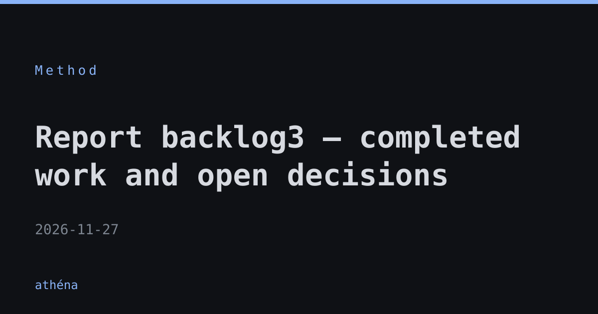

Report backlog3 — completed work and open decisions
Verified backlog synthesis derived from taches.json.
Report backlog3 — completed work and open decisions — 2026-11-27
Source re-read : state/backlog3/taches.json (29 tâches ; cron 7823a45b6f61).
State
- Done : 28
- Blocked : 1
- Ready : 0
- Estimated remaining time : 0 min
What was accomplished
- D02 — Décision finale argumentée (2026-11-27)
-
Verified : decision_finale.md ecrit (9488 o) : non, ‘rien ne change’ insuffisant — constat relu que tourner.py:modele() prend le plus gros GGUF = 14B Q3_K_M (7 taches de 09:45 a 16:14), ~1,87x plus lent (511,9 vs 274,47 s) et +924,6 Mo de pic sans gain de qualite ; decision : revenir au 8B, reglements et moteur inchanges (nice10 sans taskset, KV f16, llama.cpp file / LiteRT petites taches). Chiffres relus dans 18 fichiers de mesure + code/unit en place, aucun banc lance, aucun service arrete, rien diffuse
-
D01 — Tableau de décision (2026-11-27)
-
Verified : decision.md ecrit (5 564 o) : 8 lignes modele/moteur + 6 lignes reglages, chaque ligne renvoie a son fichier de mesure ; 13 fichiers cites verifies existants ; chiffres extraits des JSON (pp/tg/VmHWM/throttled), aucun saisi a la main ; relu apres ecriture ; aucun service arrete, rien diffuse
-
R02 — Réécrire en Rust un chemin chaud, résultats identiques (2026-11-27)
-
Verified : Equivalence prouvee: 22 articles reels + 9 cas synthetiques + dossier manquant, dicts identiques. Mesure: Rust 1,42 ms vs yaml 55,2 ms median (x38,86), python simple 6,14 ms. health_web.py inchange, .so non integre au service.
-
R01 — Identifier les chemins chauds de nos outils Python (2026-11-27)
-
Verified : cProfile des 4 scripts : flux 0,1348 s/appel (80,2% HTTP), gardien 1,25 ms, health_web 0,4818 s/cycle dont 58,6% _lire_journal (yaml, gain x165,79 valide 0/100 divergence), tourner 0,0121 s Python hors sleep vs 761,8 s reels ; chiffres relus dans data/model_bench/chauds_python.json, aucun service touche
-
O15 — Qwen3-14B Q4_K_M : la limite (2026-11-27)
- Verified : Q4_K_M téléchargé (9 001 753 984 o) et mesuré sous garde sur G041 : code 0, 555,0 s, pic VmHWM 14 676,0 Mo (marge 1 542 Mo / 9,5 % sur 16 218), 0x0, 59,3 C, garde_rc 0, 4 services actifs, aucun OOM. Tient mais c’est la limite ; fichier isolé dans models_essai/, non déposé dans models/.
Blocked — decisions needed
- L07 — Conversion GGUF vers .litertlm : faisable ? (2026-11-25)
- Verified : Voie GGUF→.litertlm absente de l’outillage installe (litert-lm 0.19.2) : litert-lm-builder n’expose que tflite_model/tflite_weights (FlatBuffers .tflite), add_tflite_model copie les octets bruts (litertlm_builder.py:1503-1505), grep -rni gguf sur builder/cli/litert_lm/ai_edge_litert = 0, litert-lm convert = ‘No such command’, import = .litertlm seulement. Sonde exacte sur Qwen3-8B-Q4_K_M.gguf : TypeError(‘bad number 4820376820 for type uint32’), sortie 0 octet, RC=0 trompeur (Gemma-3-1B : unpack_from buffer 1179993931 > 806058240). Livrable data/model_bench/conversion_gguf.md + 2 logs. Decision : partir d’un .litertlm publie (Qwen3-8B 8,31 Go releve en L05) ou installer une chaine de conversion externe.
Method
Every line above is copied verbatim from the note field of the JSON file read in this pass. The notes are reproduced in their original French, which is the source of truth; nothing was hand-written or strengthened into a larger claim.